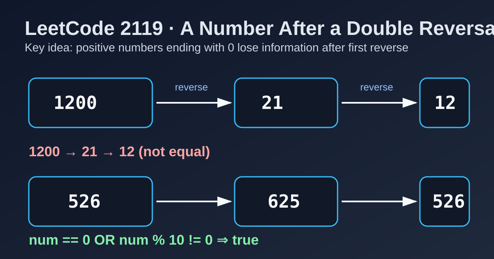

LeetCode 2119: A Number After a Double Reversal (Trailing Zero Invariant)
LeetCode 2119MathInvariantToday we solve LeetCode 2119 - A Number After a Double Reversal.
Source: https://leetcode.com/problems/a-number-after-a-double-reversal/

English
Problem Summary
Given a non-negative integer num, reverse its digits twice. Return true if the final value equals the original num; otherwise return false.
Key Insight
The first reversal removes leading zeros in the reversed number, which correspond to trailing zeros of the original number. So any positive number ending with 0 will lose digits and cannot recover after the second reversal. The only exception is 0 itself.
Algorithm
- If num == 0, return true.
- Otherwise, return num % 10 != 0.
Complexity Analysis
Time: O(1).
Space: O(1).
Common Pitfalls
- Simulating full reversal with loops is unnecessary.
- Forgetting the special case num = 0 (it should be true).
- Mistakenly thinking all even numbers fail (only numbers ending in zero fail, except 0).
Reference Implementations (Java / Go / C++ / Python / JavaScript)
class Solution {
public boolean isSameAfterReversals(int num) {
return num == 0 || num % 10 != 0;
}
}func isSameAfterReversals(num int) bool {
return num == 0 || num%10 != 0
}class Solution {
public:
bool isSameAfterReversals(int num) {
return num == 0 || num % 10 != 0;
}
};class Solution:
def isSameAfterReversals(self, num: int) -> bool:
return num == 0 or num % 10 != 0var isSameAfterReversals = function(num) {
return num === 0 || num % 10 !== 0;
};中文
题目概述
给你一个非负整数 num，把它的十进制数字翻转两次。若最终结果与原数相同返回 true，否则返回 false。
核心思路
第一次翻转会去掉翻转后数字的前导零，而这些前导零正好来自原数的尾随零。因此，所有结尾是 0 的正整数在第一次翻转后会“丢位”，第二次翻转也无法恢复。唯一例外是 0 本身。
算法步骤
- 若 num == 0，返回 true。
- 否则判断 num % 10 != 0。
复杂度分析
时间复杂度：O(1)。
空间复杂度：O(1)。
常见陷阱
- 没必要真的写循环做两次翻转。
- 忘记处理 num = 0 这个特例（应返回 true）。
- 误以为所有偶数都不行；实际上只和“末位是否为 0”有关。
多语言参考实现（Java / Go / C++ / Python / JavaScript）
class Solution {
public boolean isSameAfterReversals(int num) {
return num == 0 || num % 10 != 0;
}
}func isSameAfterReversals(num int) bool {
return num == 0 || num%10 != 0
}class Solution {
public:
bool isSameAfterReversals(int num) {
return num == 0 || num % 10 != 0;
}
};class Solution:
def isSameAfterReversals(self, num: int) -> bool:
return num == 0 or num % 10 != 0var isSameAfterReversals = function(num) {
return num === 0 || num % 10 !== 0;
};
Comments